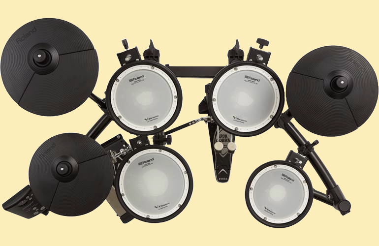

Para tocar la batería virtual:
- Haz clic en los diferentes elementos de la batería que se muestran en pantalla.
- Cada elemento produce un sonido único cuando haces clic en él.
¡Utiliza el teclado de tu ordenador para tocar la batería virtual!
- Utiliza las teclas A, S, D, F, J, K, L.
- Cada tecla está asociada a un elemento de la batería específico.
Puedes experimentar combinando diferentes elementos para crear patrones de sonido interesantes.